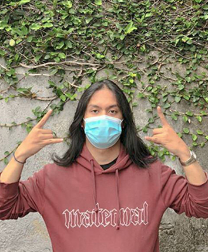

DIO ANTARES

Profil Singkat
Dio Antares adalah mahasiswa UNPAR jurusan Teknik Informatika Semester 8.
Jurusan Teknik Informatika ini adalah pilihan hidup saya.
Saya adalah orang yang mudah tersenyum, gampang bergaul, dan memiliki hobby jalan-jalan. Walaupun rambut saya gondrong, saya bukanlah preman.
Saya adalah orang yang mudah tersenyum, gampang bergaul, dan memiliki hobby jalan-jalan. Walaupun rambut saya gondrong, saya bukanlah preman.
Biodata
Dio Antares lahir di tanggal 25 September di Kota Solo Bandung.
Motto Hidup
Alone But Never Lonely
Unknown